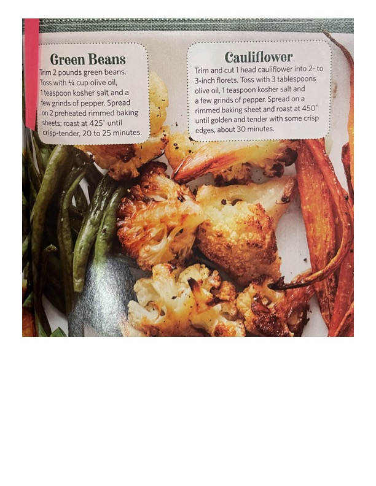

Roasted Green Beans & Roasted Cauliflower

Original cookbook page 250
Two simple roasted vegetable recipes - perfectly seasoned green beans and golden cauliflower, both with crispy edges and tender centers.
Prep: 10 minutes • Cook: 20-30 minutes • Total: 40 minutes
Ingredients
- FOR ROASTED GREEN BEANS:
- 2 pounds green beans, trimmed
- ¼ cup olive oil
- 1 teaspoon kosher salt
- A few grinds of pepper
- FOR ROASTED CAULIFLOWER:
- 1 head cauliflower, trimmed and cut into 2- to 3-inch florets
- 3 tablespoons olive oil
- 1 teaspoon kosher salt
- A few grinds of pepper
Instructions
- FOR ROASTED GREEN BEANS: Trim 2 pounds green beans. Toss with ¼ cup olive oil, 1 teaspoon kosher salt and a few grinds of pepper. Spread on 2 preheated rimmed baking sheets; roast at 425°F until crisp-tender, 20 to 25 minutes.
- FOR ROASTED CAULIFLOWER: Trim and cut 1 head cauliflower into 2- to 3-inch florets. Toss with 3 tablespoons olive oil, 1 teaspoon kosher salt and a few grinds of pepper. Spread on a rimmed baking sheet and roast at 450°F until golden and tender with some crisp edges, about 30 minutes.
Recipe #250 from collection